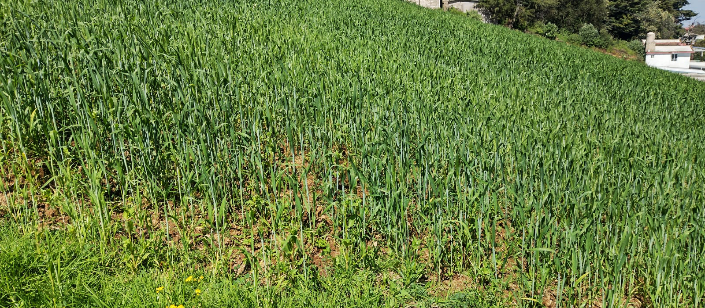

Explora los Maravillosos Beneficios del Pasto de Trigo Orgánico
En el corazón de la naturaleza se encuentra un tesoro verde que ha cautivado corazones y cuerpos con su riqueza nutricional: el Pasto de Trigo Orgánico. En cada brizna, se teje una historia de vitalidad y bienestar, ofreciendo beneficios que van más allá de lo ordinario. Acompáñanos en un viaje a través de seis razones convincentes para incorporar el Pasto de Trigo a tu rutina diaria.
Desde la energía natural hasta el control del peso saludable, este superalimento promete transformar tu salud y enriquecer tu vida de maneras extraordinarias. Descubre cómo cada sorbo y bocado de este elixir verde pueden convertirse en una inversión en tu bienestar integral. ¡Bienvenido al mundo de los beneficios asombrosos del Pasto de Trigo Orgánico!
Energía Natural
Descubre la revigorización natural con cada sorbo de nuestro Pasto de Trigo Orgánico. Cargado con nutrientes esenciales, este elixir verde es una fuente poderosa de energía que nutre tu cuerpo de manera natural. Deja que el Pasto de Trigo sea tu combustible diario, proporcionando un impulso natural sin la necesidad de estimulantes artificiales.
Refuerzo Inmunológico
Fortalece tu sistema inmunológico con la bondad pura del Pasto de Trigo. Rico en vitaminas, minerales y antioxidantes, esta maravilla verde impulsa tus defensas naturales. Con cada vaso, te sumerges en una sinfonía de beneficios que apoyan tu bienestar general y te ayudan a enfrentar los desafíos diarios con mayor resistencia.
Digestión Saludable
Cuida de tu sistema digestivo con el Pasto de Trigo. Su contenido de fibra y enzimas facilita la digestión y promueve un equilibrio intestinal saludable. Disfruta de la frescura revitalizante y deja que el Pasto de Trigo sea tu aliado en el camino hacia una digestión sin problemas y una salud gastrointestinal óptima.
Belleza desde el Interior
Experimenta la belleza que proviene de adentro hacia afuera con nuestro Pasto de Trigo. Sus nutrientes esenciales, como la clorofila y las vitaminas, contribuyen a una piel radiante y saludable. Incorpora este elixir verde en tu rutina diaria y deja que la belleza natural florezca desde lo más profundo de tu ser.
Desintoxicación Renovadora
Libera tu cuerpo de toxinas con el poder desintoxicante del Pasto de Trigo. Sus propiedades alcalinizantes y purificadoras ayudan a eliminar residuos no deseados, proporcionando una renovación interna. Brinda a tu cuerpo un respiro fresco y revitalizante con cada sorbo de este néctar verde.
Control del Peso de Forma Saludable
Apoya tu viaje de control de peso de manera natural con el Pasto de Trigo. Bajo en calorías y rico en nutrientes esenciales, este superalimento verde te ayuda a sentirte satisfecho mientras nutre tu cuerpo. Disfruta de una opción deliciosa y saludable para mantener tu peso bajo control y promover un estilo de vida equilibrado.
© 2023 Verdecitos Organic Sustainable Food.
All Rights Reserved.